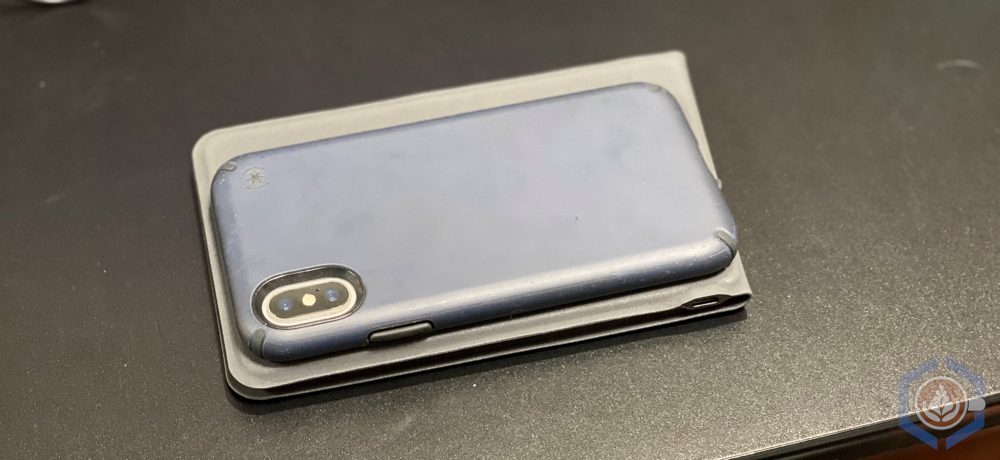

Tips for a Mobile or Temporary Home Office Setup
 My Mobile Office Setup
My Mobile Office Setup
As more people are working from home due to COVID-19, I’ve seen plenty of remote-working resources and tips being shared across social media and other platforms. The Virtually Speaking Podcast did a great episode about it recently. Most of these resources discuss the changes both the employee and employer must make regarding communication, productivity, and culture change. If you are not accustomed to working remotely, then maintaining visual communication and avoiding distractions will take time to get used to and incorporate into your daily routine. While these skills are extremely important and can feel overwhelming when you are thrown into the situation on short notice, it is also essential to keep basic ergonomics in mind.
If you’re working from home temporarily, you’ll most likely be using your laptop, possibly while sitting on the sofa or bed. Using a laptop this way for an hour or two to answer some emails may be OK, but spending an entire workday like that can be an issue. I’m not an ergonomics expert, but I do know that the basics are keeping the monitor at eye level and the mouse and keyboard at a position that will allow your forearms to be as parallel to the floor as possible. The way laptops are designed forces you to bend your back and neck which, over time, will cause fatigue and discomfort.
I’ve been working remotely for about five years, so I’ve had a lot of time to fine-tune my home office setup. Some of it was provided by my employer (external monitor, docking station) and some were purchased by me throughout the years (chair, desk, ergonomic keyboard and mouse). If your employer can provide you with some equipment or if you already have a home office setup - great. If you don’t, hopefully I can share some tips that will help you improve your temporary home office experience.
Even though I’m working remotely, travel has always been a big part of my current and previous roles. Whether it was visiting a customer, attending a training, or meetings at the company HQ, I’d find myself working solely with a laptop for longer than I’d prefer. Starting with purchasing an external mouse, I eventually acquired enough items to travel with a complete mobile office. This setup is lightweight, doesn’t take up a lot of space, and doesn’t break the bank. If you travel for work, you’ll also be able to repurpose it for that in the future. Here’s my travel setup sitting on my dining room table (which to be completely honest, functions as my desk when we have too many guests staying over):
1. Coffee
I mean, can you really work without it?!
2. Laptop Stand
This is a must for positioning your laptop’s monitor at eye level. An adjustable stand is preferable to ensure you can adjust it according to your work surface and your height. I have two laptop stands - a stationary one at my desk and one for travel.
The two stands in the photo are the Roost (on the left) and iLevel2 by RainDesign (on the right):
- Roost Laptop Stand - I love this stand. It started as a Kickstarter project and an updated version came out several years ago. That team did a great job on the product - it’s lightweight while still being very sturdy. It also has three height options. I’m 5’7” / 170 cm and I use the middle setting, so it is suitable for taller or shorter people as well. There are some cheaper imitations out there (Nextand is the most obvious one) which should also get the job done.
- Rain Design iLevel2 - I use this stand at my desk and it’s pretty nice. It’s obviously not as mobile, but it looks good and is cheaper than the Roost. My only complaint is that even at the maximum setting, the laptop doesn’t reach eye level. For me, this is not the end of the world since I use it to complement my external monitor. However, if it’s your main screen and you are my height or taller, I’d consider a different option.
And then there’s the third option, which I used at hotel rooms while traveling prior to purchasing the Roost stand - a stack of books/drawers/pillows. It’s not the most elegant or sophisticated, but it costs $0, you don’t have to wait for shipping, and finally - it’s your home office, so no co-worker can judge you on your low-tech frugal setup.
3. External Mouse and Keyboard
Using a laptop stand pretty much forces you to use an external mouse and keyboard, otherwise your forearms and wrists will end up at a really weird angle that will cause more harm than using the laptop on a desk. Of course, an ergonomic set is better, but most of us probably have a mouse and keyboard lying around somewhere. If not, a simple wired or even wireless mouse and keyboard combo can be purchased for $20 or less.
The mouse I use for travel is a very simple HP mouse that I bought eight years ago while living in France. I picked it up at a local tech store for about 5€. There’s nothing fancy about it other than the fact that it’s the perfect size to just stick in a bag and not take up a lot of space.
The keyboard I have is a Bluetooth keyboard by iClever. It is an ergonomic portable keyboard, which is a really hard thing to find. It can connect to up to three devices and works with Windows, Mac, iOS and Android. Plus, when folded it takes only a little more space than my iPhone X: 
4. Headsets (Optional)
These are not a must but will make your working from home experience a lot easier.
- Headset with noise cancelling microphone - Even though you’re at home, noise can still be an issue. My previous apartment was on a main street not far from a hospital. At least five times a day, police cars, ambulances and fire trucks would pass next to my building with sirens blazing. I got used to it very quickly, but it did tend to startle people on conference calls and make them think I was living in a war zone. After using the basic iPhone headset for several years, I purchased the Plantronics 5200 following a recommendation from one of my customers. It’s designed to be a travel headset, but I use it all the time as my main headset. It integrates with Zoom, Teams and Skype, plus the noise cancellation technology on the microphone is excellent. I have had calls while walking down a windy and busy Chicago street and those on the call had no problems hearing me.
- Noise cancelling headphones - As mentioned, the noise at home can be a real distraction, especially if you do not live alone. I use over-the-ear Bluetooth headphones that I picked up from Amazon for $40 two years ago. They don’t have active noise cancellation, but they tune out enough noise for me to focus and still hear if someone calls to me from the other room.
In conclusion, for very little effort and potentially little (to no) cost, you can greatly improve your working from home experience. If you have any ideas for ways to improve your temporary home/mobile office, would like to share your setup, or have any feedback, please comment or send me an email.
Disclaimer: this post was not sponsored by any of the mentioned products. I am simply sharing my own opinions and experiences.
Asaf Blubshtein
Cloud Customer Success Architect
My current role focuses on VMware Cloud on AWS. I spend the rest of my time with my wife, our two cats, my home-lab, and our espresso machine.